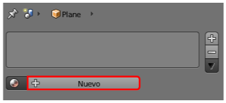
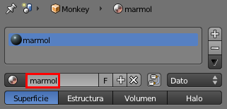
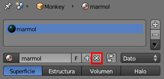
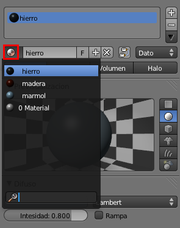

Ediciones básicas
Todo lo relativo al material lo encontramos en el panel Material  . Consideramos ediciones básicas:
. Consideramos ediciones básicas:
- Crear un material.
- Asignarle un nombre.
- Quitar un material de un objeto.
- Asignar a un objeto un material ya creado.
CREAR UN MATERIAL
Sabemos que si el objeto no tiene ningún material asignado, eso es lo primero que haremos pulsando el botón Nuevo.
ASIGNAR NOMBRE AL MATERIAL
Para una buena organización debemos adquirir la buena costumbre de poner un nombre identificativo al material nada más crearlo. Una escena compleja puede incluir docenas de materiales distintos y así se facilita su localización. Accedemos al campo del nombre con un simple clic.
QUITAR EL MATERIAL A UN OBJETO
Si tenemos un material asignado a un objeto y queremos eliminárselo usaremos para ello el icono con forma de aspa señalado en la siguiente imagen.
ASIGNAR A UN OBJETO UN MATERIAL YA CREADO
Supongamos que añadimos a escena un nuevo objeto y que le corresponde un material que ya hemos creado para otro objeto de esa escena. Todos los materiales creados se almacenan y pueden ser seleccionados desplegando el menú que se muestra en esta imagen.
